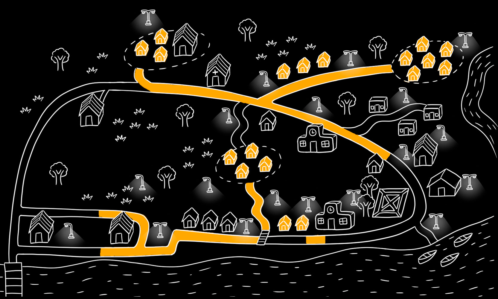
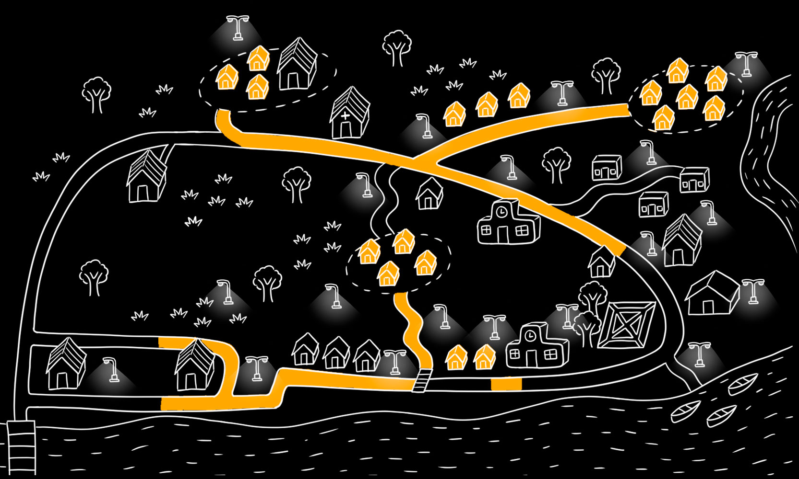

Para una mejor experiencia te recomendamos activar el audio.
cerrarPara una mejor experiencia te recomendamos activar el audio.
cerrar

En comunidades de la Amazonía peruana el silencio y la violencia sexual contra menores han marcado generaciones. Allí, donde existen más menores de edad que adultas embarazadas, un grupo de mujeres Awajún ha decidido romper el círculo. . Con el apoyo de brigadistas y lideresas, trabajan para proteger a las niñas, educar a las comunidades y cambiar el futuro de sus pueblos.

En lo más profundo de la Amazonía, donde los ríos cantan y los árboles susurran secretos, la niñez vive temerosa, amenazada por las sombras silenciosas que han arrebatado sueños y quebrado vidas. Pero entre las raíces del bosque, mujeres fuertes han despertado como guardianas de un nuevo futuro. Ellas protegen y enseñan a la niñez a alzar el vuelo, rompiendo la herencia de violencia que la mantiene atrapada en la oscuridad.


yo te escucho
Los Centros de Emergencia Mujer (CEM) atendieron 346 casos de violencia sexual en 2024, 280 de estos contra niñas y adolescentes menores de 18 años.
A pesar de ello, se estima que persiste un subregistro de casos por barreras lingüísticas, acuerdos informales y falta de acceso a servicios legales y médicos.
El Consejo de Mujeres Awajún registra de 3 a 5 casos diarios de violencia, sumando hasta 1,825 al año.
En el 2024, el 14.5% de las adolescentes entre 15 y 19 años quedaron embarazadas (556 casos), debido a la violencia sexual, la falta de educación sexual y carencia de servicios de salud.
La mortalidad materna en 2024 fue alarmante, con 4 muertes y una tasa de 62 por cada 100,000 nacidos vivos, muy por encima del promedio nacional.
En 2024, la mortalidad materna alcanzó 4 casos y una tasa de 62 por cada 100,000 nacidos vivos, superando el promedio nacional.
1. Geografía y accesibilidad
Condorcanqui es una provincia ubicada en el extremo norte del departamento de Amazonas. La capital, Santa María de Nieva, conecta de manera limitada las comunidades por vía terrestre, por lo que el transporte fluvial sigue siendo crucial. Los ríos Marañón, Nieva y Cenepa son arterias vitales para la movilidad. Sin embargo, las condiciones climáticas, exacerbadas por el fenómeno El Niño, complican el desplazamiento. Este aislamiento geográfico incrementa la vulnerabilidad de su población y dificulta el acceso a servicios básicos como salud, justicia y educación.
2. Población y situación social
Condorcanqui tiene una población estimada de 65,000 habitantes en 2024, según las proyecciones del INEI, y está conformada mayoritariamente por comunidades indígenas Awajún y Huambisa. Estas comunidades enfrentan carencias alarmantes: el 77% no tiene acceso a agua potable, el 30% no cuenta con desagüe, y el 94% no tiene electricidad. Además, las tasas de analfabetismo son preocupantes: en mujeres alcanza un 37%, casi el triple que en hombres (13%). Asimismo, en niños de hasta 12 años, la tasa de analfabetismo es de 45%.
3. La violencia como problemática estructural
La violencia contra menores y mujeres es una realidad devastadora en Amazonas. Según el Ministerio de la Mujer y Poblaciones Vulnerables (MIMP), en los últimos 7 años se registraron 12.629 casos de violencia en los Centro de Emergencia Mujer (CEM) de la provincia. De esos casos, 4562 involucraron presuntos abusos contra menores de edad.
No obstante las cifras oficiales, se estima que en la región existe un subregistro de denuncias debido a factores como barreras lingüísticas, acuerdos informales en las comunidades entre abusadores y víctimas, y la falta de acceso a servicios legales y médicos. En la provincia de Condorcanqui, solo el distrito de Nieva cuenta con una comisaría para denuncias. En los otros dos distritos de la provincia, El Cenepa y Río Santiago, no hay comisarías.

Los casos y desenlaces mencionados en este texto son reales, pero los nombres de los protagonistas han sido cambiados para proteger su identidad.


yo te creo

Mapa 1
Mapa 2
Mapa 3
Mapa 4
Ubicada en la parte sur de la provincia de Condorcanqui. Está rodeadas de ríos, con infraestructura limitada y acceso por caminos trochas o fluviales.
Selecciona una zona:

yo te apoyo
Este comparativo muestra ejemplos visuales de cómo las dinámicas han cambiado en algunas comunidades de Condorcanqui tras la sensibilización de los Apus y el empoderamiento de las mujeres.
Niñas en un bar, en un contexto de vulnerabilidad.
Niñas yendo al colegio, reflejando acceso a la educación.
Mujeres enfocadas únicamente en tareas domésticas y cuidado familiar.
Mujeres ocupando roles en liderazgo comunitario y participando en labores organizativas.
Hombres participando en transporte comunitario, destacando un rol en la comunidad diferenciado de las mujeres.
Hombres realizan tareas domésticas desde niños.
En las comunidades indígenas, los apus desempeñan un rol esencial como líderes y guías, además de tomar las decisiones más relevantes y resolver conflictos. Demetrio Shajup, de Mamayaque, y Gabriel Arrobo, de Huampami, han destacado por su apoyo a la lucha contra la violencia de género. A través de su liderazgo, han promovido la inclusión, el empoderamiento de las mujeres y la actualización de normas comunitarias para garantizar mayor equidad.
Antes, estos Apus resolvían conflictos priorizando la armonía comunitaria, lo que perpetuaba la impunidad en casos de violencia sexual. Además, las mujeres eran excluidas de las decisiones y la violencia de género era normalizada. Ahora, gracias a la sensibilización y el trabajo con instituciones como el UNFPA, los Apus colaboran con el sistema judicial, impulsan la participación paritaria de mujeres en los consejos comunitarios y promueven la protección de las víctimas, un paso hacia la justicia y la equidad en sus comunidades.
(Líder de la comunidad de Mamayaque)
(Líder de la comunidad de Mamayaque)
En Mamayaque, el Apu Demetrio ha asumido un rol de liderazgo enfocado en la prevención y la atención de la violencia contra niñas y mujeres. Coordinando estrechamente con psicólogas, abogadas y autoridades locales, ha impulsado charlas de sensibilización en las escuelas y las asambleas comunitarias. Su objetivo es romper los ciclos de violencia que históricamente han afectado su comunidad.
Además, ha destacado la importancia de empoderar a las mujeres, a través de la promoción de su participación activa en las decisiones comunales. “Para mí, es muy importante que las mujeres conozcan sus derechos. En el pasado se les marginaba, pero ahora trabajamos juntos; sus opiniones son vitales para nuestra comunidad”, afirma el Apu Demetrio. Este compromiso ha abierto la puerta para la inclusión de las mujeres en el diálogo y la toma de decisiones.
En Huampami, el Apu Gabriel se ha convertido en un firme promotor de los talleres y capacitaciones organizados por el UNFPA. Bajo su liderazgo, se ha fortalecido el respeto hacia las mujeres, involucrándolas activamente en el consejo directivo de su comunidad. Además, ha trabajado para que los casos de violencia de género sean derivados a las instituciones legales competentes, para evitar que se resuelvan únicamente en el ámbito comunitario.
"Es nuestra responsabilidad actualizar nuestras reglas para que sean más justas e incluyan las voces de todos, especialmente las de las mujeres", señala el Apu Gabriel. Su visión ha sido clave para lograr cambios sostenibles en su comunidad, destacando el rol de las mujeres no solo como beneficiarias, sino también como lideresas comprometidas con el cambio.
En junio de 2024, el ministro de Educación, Morgan Quero, calificó los casos de abuso sexual contra niñas en Condorcanqui como “prácticas culturales”. Tras la denuncia de Rosmery Pioc, quien reveló el aterrador dato de más de 60 niñas awajún abusadas en un periodo de 14 años en Condorcanqui, el gobierno peruano, a través de diferentes ministerios, realizó una serie de promesas para enfrentar esta crisis. Sin embargo, un análisis detallado de los 20 ofrecimientos hechos por diversos ministerios evidencia un cumplimiento mínimo y un predominio de compromisos incumplidos o en proceso. Al momento de la publicación de este reportaje, dos promesas han sido cumplidas.
Sector encargado: Ministerio de Educación
Promesa: Separar a los docentes denunciados en Condorcanqui por hostigamiento y violencia sexual.
Argumento: Se confirmó la separación de 69 docentes denunciados.
Sector encargado: Ministerio de la Mujer y Poblaciones Vulnerables (MIMP)
Promesa: Instalar una cámara Gesell para la atención de las víctimas de abuso sexual.
Argumento: Confirmada su instalación en Condorcanqui.
Sector encargado: Ministerio de Educación
Promesa: Crear un grupo temporal para diseñar estrategias contra la violencia sexual en comunidades Awajún y Wampis.
Argumento: El grupo fue creado, pero no hay evidencia clara de acciones concretas.
Sector encargado: Ministerio de la Mujer y Poblaciones Vulnerables (MIMP)
Promesa: Ampliar el personal y horario del CEM en Condorcanqui.
Argumento: Anunciado, pero sin datos claros sobre implementación.
Sector encargado: Ministerio de Salud (MINSA)
Promesa: Garantizar atención integral a las víctimas, incluyendo servicios de salud mental y reproductiva.
Argumento: Se han realizado algunas acciones.
Sector encargado: Ministerio de Salud (MINSA)
Promesa: Implementar brigadas móviles de salud mental en la región.
Argumento: Se han realizado algunas acciones.
Sector encargado: Ministerio de Justicia (MINJUS)
Promesa: Incrementar fiscales capacitados en la región.
Argumento: Se han realizado algunas acciones.
Sector encargado: Ministerio de Educación
Promesa: Implementar un sistema eficiente para que estudiantes puedan reportar abusos de forma segura y confidencial.
Argumento: No se han establecido mecanismos.
Sector encargado: Ministerio de Educación
Promesa: Capacitar al personal educativo en prevención de violencia sexual y enfoque de género.
Argumento: Si bien se ha realizado en algunas localidades, no se ha hecho en toda la región ni tampoco en Condorcanqui.
Sector encargado: Ministerio de Educación
Promesa: Realizar visitas periódicas a las escuelas para detectar y prevenir casos de violencia.
Argumento: No se han establecido acciones ni presupuesto alrededor del tema.
Sector encargado: Ministerio de Educación
Promesa: Implementar programas de educación sexual integral con enfoque intercultural en las escuelas.
Argumento: No se han establecido acciones ni presupuesto alrededor del tema.
Sector encargado: Ministerio de la Mujer y Poblaciones Vulnerables (MIMP)
Promesa: Realizar campañas masivas en lenguas originarias para prevenir la violencia sexual.
Argumento: No se han establecido acciones ni presupuesto alrededor del tema.
Sector encargado: Ministerio de la Mujer y Poblaciones Vulnerables (MIMP)
Promesa: Capacitar a mujeres líderes para empoderarlas en la lucha contra la violencia sexual.
Argumento: No se han establecido acciones ni presupuesto alrededor del tema.
Sector encargado: Ministerio de la Mujer y Poblaciones Vulnerables (MIMP)
Promesa: Abrir nuevos CEM en zonas cercanas a Condorcanqui.
Argumento: No se han establecido acciones ni presupuesto alrededor del tema.
Sector encargado: Ministerio de Salud (MINSA)
Promesa: Renovar y ampliar centros de salud en Condorcanqui.
Argumento: No se han establecido acciones ni presupuesto alrededor del tema.
Sector encargado: Ministerio de Salud (MINSA)
Promesa: Incrementar el número de especialistas en salud mental y violencia sexual.
Argumento: No se han establecido acciones ni presupuesto alrededor del tema.
Sector encargado: Ministerio de Justicia (MINJUS)
Promesa: Garantizar defensa legal gratuita a las víctimas.
Argumento: No se han establecido acciones ni presupuesto alrededor del tema.
Sector encargado: Ministerio de Justicia (MINJUS)
Promesa: Establecer un registro accesible de agresores condenados.
Argumento: No se han establecido acciones ni presupuesto alrededor del tema.
Sector encargado: Ministerio de Justicia (MINJUS)
Promesa: Agilizar los procedimientos legales para casos de violencia sexual.
Argumento: No se han establecido acciones ni presupuesto alrededor del tema.
Sector encargado: Ministerio de Justicia (MINJUS)
Promesa: Asegurar que los casos se resuelvan con rapidez.
Argumento: No se han establecido acciones ni presupuesto alrededor del tema.
En el Amazonas, lideresas Awajún como Rossmery Pioc y Carmen Samaniego tejen una red de esperanza y cambio, promoviendo la equidad y combatiendo la violencia contra niñas y mujeres. Desde el Consejo de Mujeres y como intérprete del UNFPA, respectivamente, impulsan encuentros, servicios transformadores y alianzas que conectan a mujeres con oportunidades y recursos. Junto a lideresas como Sharon Alberca y Silvia Shimbuka, trabajan por el empoderamiento económico y social, mientras los Apus, sensibilizados, se convierten en aliados.
Esta red fomenta la denuncia, reduce la tolerancia al abuso y proyecta un futuro donde las generaciones crecen con modelos femeninos de liderazgo y valores renovados. Según proyecciones realizadas por ECData con un modelo en R -que considera variables como la participación femenina en liderazgo, programas educativos sobre igualdad, colaboración con instituciones como el UNFPA, acceso a apoyo psicológico para víctimas y la judicialización de casos de violencia-, en cinco años las comunidades Awajún podrían reducir significativamente la violencia de género. A diez años, con estrategias educativas y alianzas fortalecidas, estas comunidades podrían convertirse en un ejemplo nacional de transformación sostenible y justicia social.
Estos cambios positivos son un reflejo de esperanza para las comunidades de Amazonas, pero también una hoja de ruta para otras sociedades que enfrentan círculos de violencia. Si bien son pasos fundamentales y sin precedentes, actualmente, solo hay dos comunidades sensibilizadas en Condorcanqui, lo que representa apenas el 2% de las comunidades de la provincia y el 0.7% del total de comunidades en Amazonas. Al compartir estas historias, tú también te conviertes en un agente de cambio, multiplicando la fuerza de quienes decidieron romper el silencio y construir un futuro más seguro. Haz que estas voces lleguen más lejos.
Elige una mariposa y sé parte del cambio que se necesita. Comparte y difunde estas historias.


 
